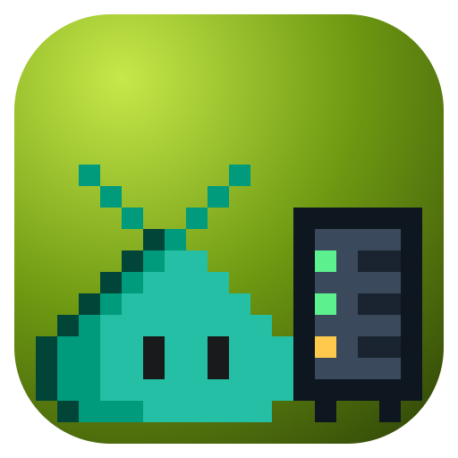

agent-test-serverA model that does exactly what you say.
A fake LLM and MCP server for testing VS Code and other clients. Script it from tests, or let your agent drive it.
Chat
What's the weather in Paris?
✓Ran get_forecast from the weather MCP server
{"city":"Paris"}It's sunny in Paris, 22°C.
Will it rain tomorrow?
No rain expected tomorrow.
Ask about your codetest-model Agent Test Server
$ agent-test-server start $ agent-test-server mcp tool weather get_forecast --text "Sunny" $ agent-test-server reply --when-user weather --tool-call get_forecast --args '{"city":"Paris"}' $ agent-test-server reply "It's sunny in Paris, 22°C." --when-tool-result get_forecast $ agent-test-server reply "No rain expected tomorrow." --when-user tomorrow $ agent-test-server config vscode --write chatLanguageModels.json --write-mcp mcp.json # ask in VS Code, then check what it sent $ agent-test-server requests wait --kind mcp --tool get_forecast { "id": "r4", "kind": "mcp", "status": "completed", "mcp": { "tool": "get_forecast", "arguments": { "city": "Paris" } } }
The same rules answer Chat Completions Responses Messages and MCP, streaming or not
Script it
Rules from tests with the SDK, or from your agent with the CLI.
reply "Hi" --stream 4:50
Break it on cue
Rate limits, overloads, dropped streams, and hangs.
fail --status 429 --oncePlay the model
Hold any request and answer it by hand.
respond r7 "pong"